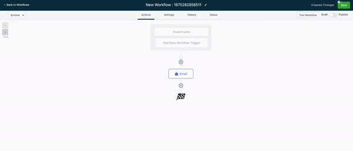
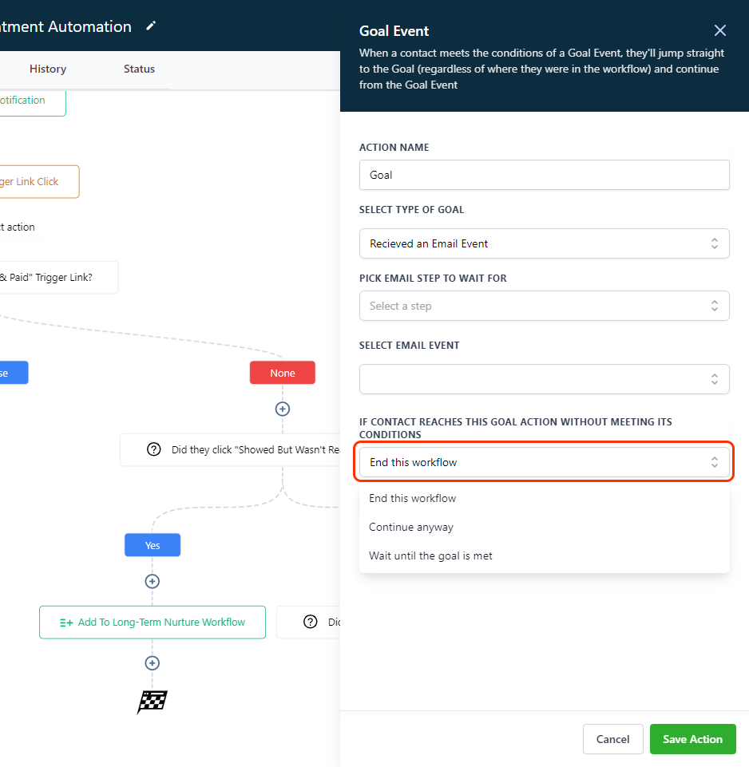
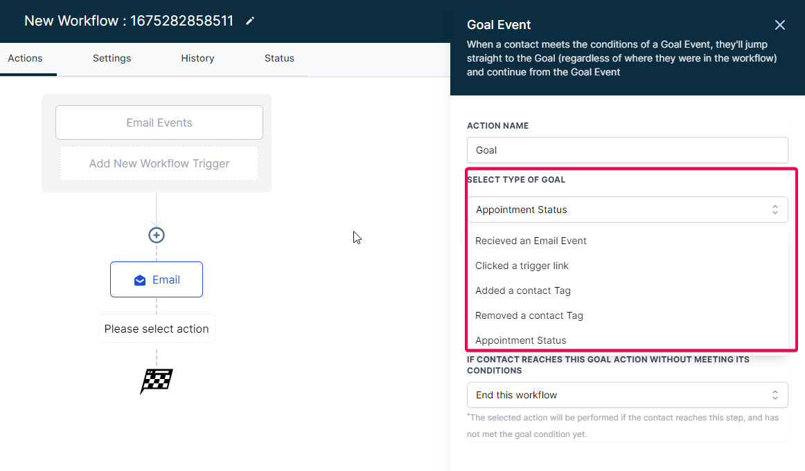
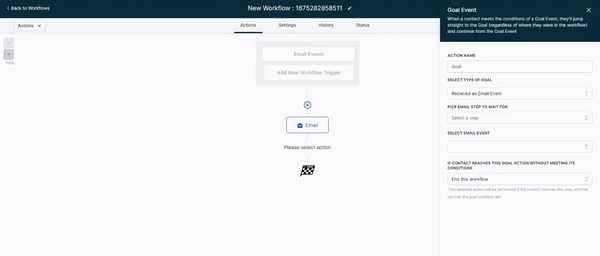
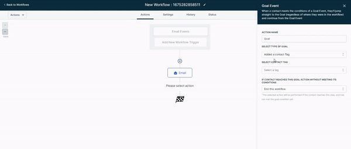
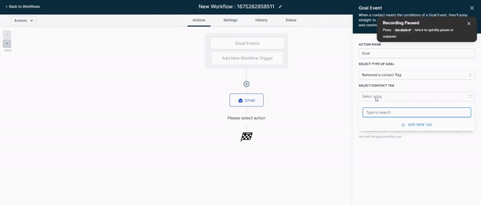

Have you ever thought about how great it would be if contacts who meet a specific condition or a goal event within a workflow could automatically move to a specific step within a workflow without going through the previous steps?
Well, now you can help with the Workflow Goal Events Action. This article will cover Goal Events and how and when to use them.
Please Note:
For version 1, we restricted Goal Event filters to email events, adding or removing tags, trigger link clicks and appointment status only. We plan to add more goals events in the future, such as forms submissions, etc.
Also currently we are restricting to ONE Goal Event per workflow.
Covered in this Article:
How to set up Goal Events in workflows
What are Goal Events?
How do Goal Events work?
What happens if the contact reaches a Goal Event without meeting its conditions?
What Goal Events are currently supported
1. Received an Email Event:
Usage Cases:
FAQs:
2. Clicked a Trigger Link:
Usage Cases:
FAQs:
3. Contact Tags (Add & Remove):
Usage Cases:
FAQs:
4. Appointment Status:
Usage Cases:
FAQs
Why would you want to use Goal Events?
How to set up Goal Events in workflows
Select the Workflow action called Goal Event > Select between "Received email event" ,"Clicked a trigger link." , "Added a Contact Tag" , "Removed a Contact Tag" , and "Appointment Status" .

What are Goal Events?
Goal Events allows you to set a contact Goal for a workflow. From the moment a contact enters the workflow, the system will "listen" for the specified Goal Event to occur regardless of the contact's step.
How do Goal Events work?
Once the contact has met the goal conditions you specified in action, it will be pulled into the goal step (regardless of where they are in the workflow).
Email events, tags, and trigger link clicks are currently supported in workflow Goal Action. Please check back here as we add more actions.
What happens if the contact reaches a Goal Event without meeting its conditions?
If the Goal event was not reached by the time the contact reaches the goal action in your automation, there would be 3 options to select from:
1. End this workflow
2. Continue Anyway
3. Wait until the Goal is met

What Goal Events are currently supported

1. Received an Email Event:
For the "Received email event" filter, make sure to select the events you wish the system to recognize. There are several options:
- Clicked
- Opened
- Unsubscribed (Mailgun only)
- Complained
- Spam

Usage Cases:
- Engagement-Based Marketing: Automatically move contacts to a workflow step designed for engaged users when they open or click on an email.
- Drip Email Campaigns: Move contacts to the next email in a drip series only after they've opened the previous one.
- Unsubscription Handling: Trigger a win-back workflow when a contact unsubscribes from your emails.
- Behavior-Based Personalization: If a contact clicks on a particular type of content in your emails more often (e.g., "Tech Gadgets"), trigger a workflow that sends them more personalized content based on their interests.
- Event Registration: If you're promoting an event via email, set a goal for when a contact opens the event invitation and triggers a follow-up workflow to nudge them toward registration.
- Webinar Follow-up: After sending a webinar replay link via email, trigger a follow-up workflow when a contact opens the email containing the replay.
- Survey Participation: Send out a survey via email and set a goal for when a contact opens the survey email, triggering a workflow to send them a thank you message or reward for participating.
- Email Course Completion: If you're delivering an email course, trigger a workflow that sends a certificate or badge when a contact opens the final course email.
- Discount Usage: If you've sent an email with a discount code, set a goal for when a contact opens the discount email, triggering a workflow to remind them to use their discount before it expires.
- Sales Follow-up: For sales teams, if a proposal or quotation is sent via email, set a goal for when the contact opens the email, triggering a follow-up workflow to keep the deal moving.
FAQs:
Can a single email event meet multiple goal events?
Yes, a single email event, such as opening an email, can meet multiple goal events if the goals are set for that particular event.
What if an email event happens outside of business hours? Will it still trigger the goal event?
Yes, the system "listens" for the specified email event around the clock. The contact will be moved to the goal step if the goal event is met, even outside business hours.
If a contact opens an email multiple times, will it trigger the goal event each time?
No, once a contact meets a particular Email Event Goal, they won't be evaluated for the same goal event again in that workflow.
What happens if an Email Event Goal is set for an email not part of the workflow?
The goal event will only be triggered if the contact opens or clicks on the specific email associated with the goal while in the workflow. The goal event cannot be met if the email isn't part of the workflow.
Can I set up a goal event when a contact does NOT open an email or click a link?
Goal events currently support positive conditions, i.e., when a contact takes a certain action. Negative conditions, such as not opening an email, are not currently supported for goal events.
2. Clicked a Trigger Link:
For the "Clicked Trigger link," please select the trigger links listed in the dropdown menu. If you have not created a trigger link, please create one before proceeding.
Usage Cases:
- Website Engagement: Move contacts to a workflow step designed for engaged users when they click on a specific link on your website.
- Survey Responses: Use different trigger links for different survey responses, moving the contact to a tailored workflow step based on their response.
- Product Interest: Move contacts to a workflow designed to nurture interest in a specific product or service when they click a link related to that product.
- Content Marketing: If you've shared a blog post or a guide, set a goal event for when a contact clicks the link to the content, triggering a follow-up workflow to gauge their interest or gather feedback.
- Webinar Signups: If promoting a webinar, trigger a follow-up workflow when a contact clicks on the registration link.
- eCommerce Purchase: If you're an eCommerce business, trigger a post-purchase workflow when a contact clicks on a "Buy Now" or "Add to Cart" link.
- Membership or Subscription Signups: If you're promoting a membership or subscription, trigger a welcome workflow when a contact clicks the signup link.
- Trial Activation: For software companies offering a free trial, trigger an onboarding workflow when a contact clicks on the "Activate Trial" link.
- Affiliate Marketing: If you're an affiliate marketer, trigger a follow-up workflow when a contact clicks on your affiliate link.
- Download Confirmation: If you're offering a free resource download, set a goal event for when a contact clicks the download link, triggering a follow-up workflow to engage the contact further.
FAQs:
What if a contact clicks the trigger link before they enter the workflow? Will it still trigger the goal event?
No, a contact needs to be in the workflow and meet the goal conditions during that time for the Trigger Link Clicked Goal Event to be activated.
If a contact clicks a trigger link multiple times, will it trigger the goal event each time?
No, once a contact meets a particular Trigger Link Clicked Goal Event, they won't be evaluated for the same goal event again in that workflow.
What happens if a contact clicks a trigger link but does not meet other conditions for the Goal Event?
The contact will not be moved to the Goal Event step unless they meet all conditions set for that goal event.
Can a trigger link from any website be used for the Trigger Link Clicked Goal Event?
Screenshots

